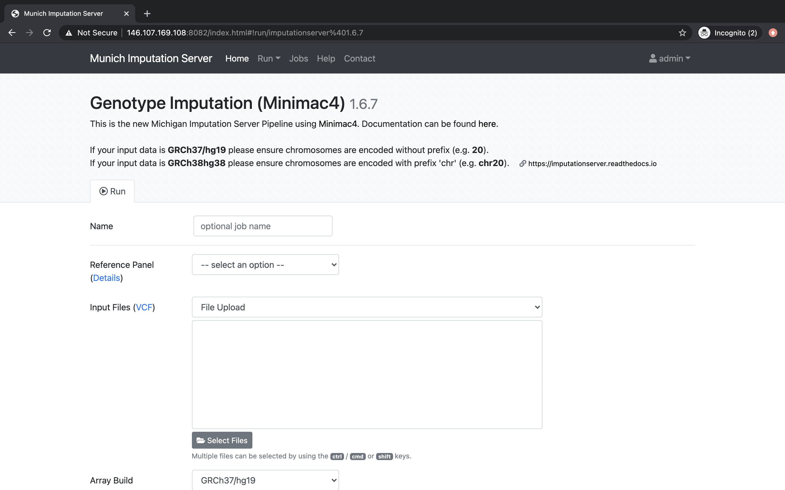

Please login with your credentials and click on the Run tab to start a new imputation job. The submission dialog allows you to specify the properties of your imputation job.
The following options are available:
Our server offers genotype imputation from different reference panels. The most accurate and largest panel is HRC (Version r1.1 2016). Please select one that fulfills your needs and supports the population of your input data:
More details about all available reference panels can be found here.
VCF files can be uploaded either from your local disk or by specifying a remote sftp / HTTPS location. In both cases, several files or several locations can be selected at once. Please make sure that all files fulfill the requirements.
When using the file upload, data is uploaded from your local file system to Michigan Imputation Server. By clicking on Select Files an open dialog appears where you can select your VCF files:
An other convenient way to use your data is by importing it directly from a remote SSH server. This can be achieved by selecting Secure File Transfer Protocol (SFTP).
After clicking on the Import Files button, a new dialog appears where you can enter your SFTP credentials and the URLs of your files or folders. A URL consists of the server address followed by the full Unix path. A path can be either point to a folder or to a file. Several paths can be specified in consecutive lines.
Data can also be imported by using HTTP(S) link. This can be achieved by selecting URLs (HTTP).
After clicking on the Add URLs button, a new dialog appears where you can add the links.
Please select the build of your data. Currently the options hg19 and hg38 are supported. Michigan Imputation Server automatically updates the genome positions (liftOver) of your data. All reference panels except TOPMed are based on hg19 coordinates.
To minimize the file size, Michigan Imputation Server includes a r2 filter option, excluding all imputed SNPs with a r2-value (= imputation quality) smaller then the specified value.
If your uploaded data is unphased, Eagle v2.4 will be used for phasing. In case your uploaded VCF file already contains phased genotypes, please select the "No phasing" option.
| Algorithm | Description |
|---|---|
| Eagle v2.4 | The Eagle algorithm estimates haplotype phase using the HRC reference panel. This method is also suitable for single sample imputation. After phasing or imputation you will receive phased genotypes in your VCF files. |
Please select the population of your uploaded samples. This information is used to compare the allele frequencies between your data and the reference panel. Please note that not every reference panel supports all sub-populations.
| Population | Supported Reference Panels |
|---|---|
| AFR | all |
| AMR | all |
| EUR | all |
| Mixed | all |
| AA | CAAPA |
| ASN | 1000 Genomes Phase 1 (Version3) |
| EAS | 1000 Genomes Phase 3 (Version5) |
| SAS | 1000 Genomes Phase 3 (Version5) |
In case your population is not listed or your samples are from different populations, please select Mixed to skip the allele frequency check. For mixed populations, no QC-Report will be created.
Please select if you want to run Quality Control & Imputation, Quality Control & Phasing Only or Control Only.
All Imputation Server results are encrypted by default. Please tick this checkbox if you want to use AES 256 encryption instead of the default encryption method. Please note that AES encryption does not work with standard unzip programs. We recommend to use 7z instead.